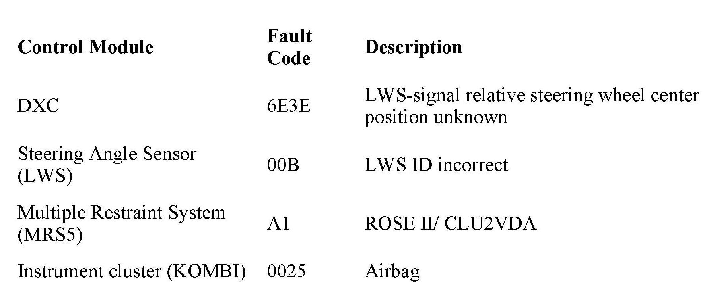

ABS/TCS - 4X4 Warning Lamp ON/Code 6E3E Stored
SI B 34 01 09Brakes
September 2009
Technical Service
SUBJECT
DSC 4x4 Warning Light Illuminated; Fault Code 6E3E Steering Angle Sensor Stored in Dynamic Stability Control Module (DXC)
MODEL
E83 (X3)

SITUATION
The Steering Angle Sensor must be adjusted afier certain repair work is performed, such as a wheel alignment or coding/programming of the DXC module. Due to a software error of the steering angle sensor, the DXC warning may be displayed afier the adjustment is performed. The faults listed below may also be stored:
In most cases it is not necessary to replace the steering angle sensor. If the fault code 6E3E is stored in the DXC module, follow the procedure listed in this bulletin:
1. Repeat the Test Plan to adjust the steering angle sensor.
2. Perform a Quick Clear to erase all fault entries.
3. Switch off the ignition and wait for a minimum of 1 minute.
4. Switch on the ignition and start the engine.
5. Check the fault memory.
6. If the fault is eliminated, no further action is necessary.
7. If the fault is present, repeat the steps listed above.
NOTE:
It may be necessary to perform the procedure listed above up to 3 times to properly reset the steering angle sensor. If the steering angle sensor cannot be adjusted after 3 attempts, the sensor must be replaced.
PARTS INFORMATION
The steering angle sensor should be replaced if the procedure listed in this bulletin is unsuccessful. Refer to EPC/ETK for the appropriate part number.
WARRANTY INFORMATION
Refer to KSD.

Disclaimer